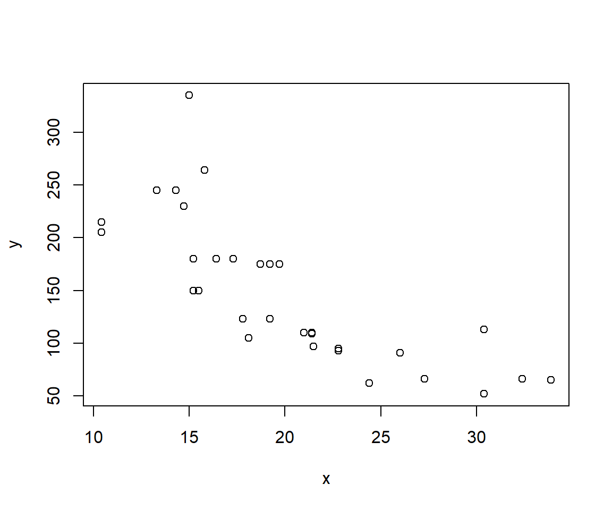
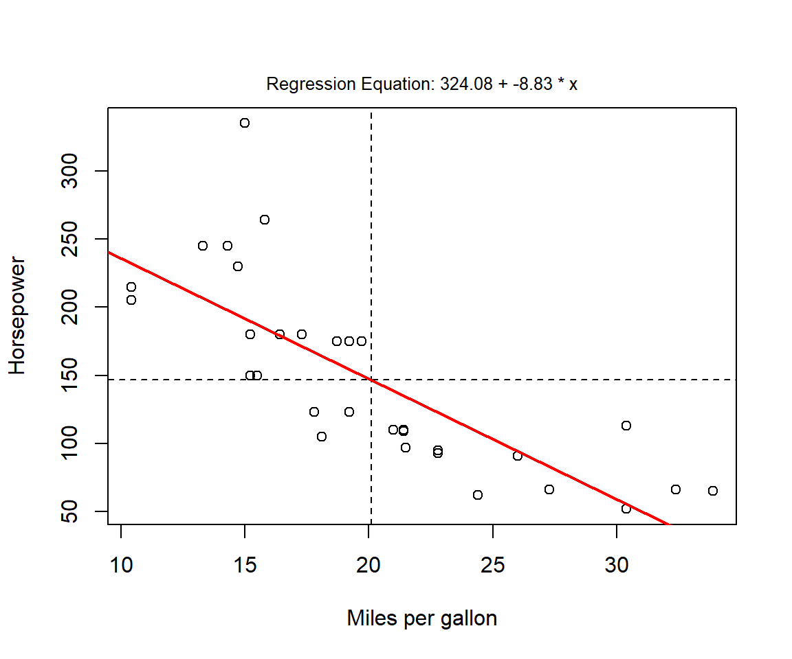
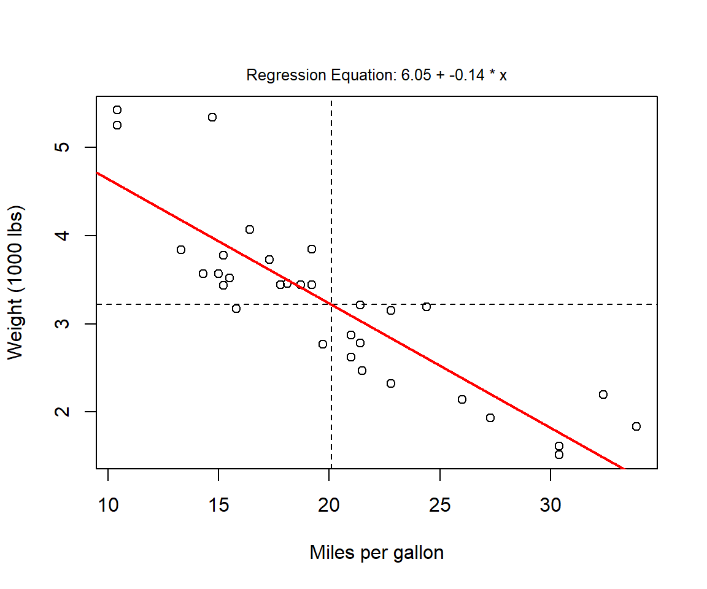

3.7 Erstellen von eigenen Funktionen
Wie wir einzelne Funktionen (bspw. mean() und sd()) anwenden haben wir bereits gelernt. Wir können aber auch selber eine Anwendung oder Funktion schreiben, in der mehrere Funktionen gebündelt sind. Viele Schritte in der Datenaufbereitung und Analyse wiederholen sich ständig. Daher ist es sinnvoll bestimmte Schritte zu “automatisieren”. Wollen wir zum Beispiel statistische Werte zum mtcars Datensatz haben, so können wir jeden Wert einzeln abfragen mit
length(mtcars$hp) # Anzahl der Werte
## [1] 32
mean(mtcars$hp) # Arithmetisches Mittel
## [1] 146.6875
sd(mtcars$hp) # Standardabweichung
## [1] 68.56287
min(mtcars$hp) # Minimum
## [1] 52
max(mtcars$hp) # Maximum
## [1] 335
median(mtcars$hp) # Median
## [1] 123Eine Möglichkeit wiederholte Abfragen zu ermöglichen ist das Ablegen in einen einzelnen Vektor:
mtcars_hp_descriptives <- c(
n = length(mtcars$hp),
mean = mean(mtcars$hp),
sd = sd(mtcars$hp),
min = min(mtcars$hp),
max = max(mtcars$hp),
median = median(mtcars$hp)
)
mtcars_hp_descriptives
## n mean sd min max median
## 32.00000 146.68750 68.56287 52.00000 335.00000 123.00000Et voila 🎉 Eingabe des Objektes mtcars_hp_descriptives ermöglicht es uns die statistischen Kennwerte direkt auszugeben. Im mtcars Datensatz gibt es aber noch weitere Kenndaten. Wie können wir den code so anpassen, dass wir nicht jedes mal alles wieder neu abtippen müssen. Es wäre doch zu schön wenn so etwas in R möglich ist. Zwei Argumente warum ihr euch bei diesen Schritten gut überlegen solltet eine Funktion zu schreiben:
- Anstatt mehrerer Codezeilen ist in Zukunft für dasselbe Ergebnis eine Codezeile – der Funktionsaufruf – erforderlich.
- Der Code bzw. euer Skript wird weniger redundant und übersichtlicher
- Fehlerkorrekturen und Anpassungen werden vereinfacht, da ihr nur die Funktion ändern müsst und nicht jedes mal die Stellen wo die Funktion auftritt.
Funktionen in R sind Objekte und werden ebenfalls mit dem <- zugewiesen. Das Schema ist dabei immer das folgende mit drei zentralen Komponenten:
- Funktionsargumente, wie bei unseren bisherigen Funktionen auch (bspw.
na.rm = TRUE) - Body der Funktion, welcher den Code zum Ausführen enthält
- environment, beinhaltet die Datenstruktur damit die Funktion einen Wert mit dem Namen assoziieren kann
funktionsname <- function(argument_1, argument_2) {
# Body: Code, der ausgeführt wird
}Mit der Funktion function() weisen wir einem Objektnamen ein Funktionsobjekt zu. Um den Code auf eine andere Variable anzuwenden, müssten wir jeweils mtcars$hp ersetzen – z. B. durch mtcars$cyl oder eine Variable aus einem anderen Datensatz. Wir möchten diesen Teil also durch einen Platzhalter ersetzen, den wir dann als Funktionsargument übergeben können. Mit einem generischen Platzhalter, den wir der Einfachheit halber als x bezeichnen, sähe der Code also wie folgt aus:
descriptives <- function(x) { # Wir definieren 'x' als Argument
descriptives_vector <- c(
n = length(x),
mean = mean(x),
sd = sd(x),
min = min(x),
max = max(x),
median = median(x)
)
}Die Funktionsargumente werden in eine runde Klammer geschrieben () und der body in eine eckige []. Unter Environment taucht unsere Funktion descriptives nun bei der Rubrik Funktionen auf und kann im Folgenden eingesetzt werden.
descriptives(mtcars$disp)Komisch das uns die Werte noch nicht angezeigt werden. Dies liegt daran, dass wir abschließend noch definieren müssen, was die Funktion mit der Anfrage durchführen soll. Vereinfacht gesagt, die Werte sollen angezeigt werden.
descriptives <- function(x) { # Wir definieren 'x' als Argument
descriptives_vector <- c(
n = length(x),
mean = mean(x),
sd = sd(x),
min = min(x),
max = max(x),
median = median(x)
)
return(descriptives_vector) # oder nur descriptives_vector
}
descriptives(mtcars$cyl) # Zusammenfassung der Zylinder
## n mean sd min max median
## 32.000000 6.187500 1.785922 4.000000 8.000000 6.000000
descriptives(mtcars$mpg) # Zusammenfassung des Verbrauchs
## n mean sd min max median
## 32.000000 20.090625 6.026948 10.400000 33.900000 19.200000
descriptives(mtcars$gear) # Zusammenfassung Anzahl der Gänge
## n mean sd min max median
## 32.0000000 3.6875000 0.7378041 3.0000000 5.0000000 4.0000000Falls wir jedoch fehlende Werte NAs in unserem Datensatz haben müssen wir die Funktion anpassen, da dies in den Funktionsargumenten momentan noch fehlt.
descriptives <- function(x, na.rm = TRUE) { # Default-Wert für 'na.rm' = TRUE
descriptives_vector <- c(
n = length(x),
mean = mean(x, na.rm = na.rm),
sd = sd(x, na.rm = na.rm),
min = min(x, na.rm = na.rm),
max = max(x, na.rm = na.rm),
median = median(x, na.rm = na.rm)
)
return(descriptives_vector)
}
a <- c(3,6,12,4,NA)
descriptives(a)
## n mean sd min max median
## 5.000000 6.250000 4.031129 3.000000 12.000000 5.000000💡 Anstelle von TRUE oder FALSE erkennt R auch ein einfaches T oder F.
Viele Funktionen haben default als vordefinierte Argumente. Diese könnten wir auch in unserer Funktion ergänzen indem wir na.rm = setzen:
Dieser Default-Wert wird nun also immer verwendet, wenn wir das Argument nicht angegeben haben. Unsere Funktion ist somit noch flexibler geworden.
3.7.1 Speziellere Anwendungen von Funktionen
Lasst uns diese Kenntnisse erweitern und unsere Daten mit Statistikparametern plotten:
spezialplot <- function(x = rnorm(100),
y = rnorm(100),
add.mean = FALSE,
add.regression = FALSE,
p.threshold = .05,
add.modeltext = FALSE,
... # Weitere Argumente die ergänzt werden sollen
) {
# Erstelle den Plot
# und setze ggf. weitere Argumente wie `main` für Titel
plot(x, y, ...)
# Erstelle Referenzlinie vom Mittelwert wenn add.mean = TRUE
if(add.mean == TRUE) {
abline(h = mean(y), lty = 2)
abline(v = mean(x), lty = 2)
}
# Erstelle Regressionlinie wenn add.regression = TRUE
if(add.regression == TRUE) {
model <- lm(y ~ x) # Erstelle Regression mit `lm` linear model
p.value <- anova(model)$"Pr(>F)"[1] # Ziehe den p Wert aus dem Objekt p.value
# Definiere die Farbe in Abhängigkeit von p.value und p.threshold
if(p.value < p.threshold) {line.col <- "red"}
if(p.value >= p.threshold) {line.col <- "black"}
abline(lm(y ~ x), col = line.col, lwd = 2) # Füge die Regressionlinie hinzu
}
# Add regression equation text if add.modeltext is TRUE
if(add.modeltext == TRUE) {
# Erstelle Regressionsdaten
model <- lm(y ~ x)
# Extrahiere die Koeffizienten vom Objekt `model`
coefficients <- model$coefficients
a <- round(coefficients[1], 2)
b <- round(coefficients[2], 2)
# Create text
model.text <- paste("Regression Equation: ", a, " + ", b, " * x", sep = "")
# Add text to top of plot
mtext(model.text, side = 3, line = .5, cex = .8)
}
}Jetzt können wir in unsere Beispielfunktion Daten einsetzen aus dem mtcars Datensatz:
spezialplot(x = mtcars$mpg,
y = mtcars$hp)
# Das sieht danach aus, dass der Verbrauch größer ist je mehr PS das Auto hat
# Wir können das Überprüfen indem wir die zusätzlichen Argumente in unserer Funktion setzen
spezialplot(x = mtcars$mpg,
y = mtcars$hp,
add.mean = TRUE,
add.regression = TRUE,
add.modeltext = TRUE,
p.threshold = .05,
xlab = "Miles per gallon",
ylab = "Horsepower")
# Und wie schaut das ganze für Gewicht und Verbrauch aus
spezialplot(x = mtcars$mpg,
y = mtcars$wt,
add.mean = TRUE,
add.regression = TRUE,
add.modeltext = TRUE,
p.threshold = .05,
xlab = "Miles per gallon",
ylab = "Weight (1000 lbs)")
Schnelle Analyse: Je mehr Pferdestärken und je größer das Gewicht, desto größer ist auch der Verbrauch des Autos.
💡 Anstelle eine Funktion immer wieder aufs neue zu schreiben empfiehlt es sich ein R Skript anzulegen unter File -> New File -> R script. Hier könnt ihr eure Funktionen reinschreiben, in eurem Projektordner hinterlegen und mit der Funktion source automatisch in eure aktuelle R session hineinladen. Das spart Platz und beschleunigt eure explorative Datenanlyse erheblich.
# Evaluiere den Code in meinem `custom_function` script zu Beginn meiner Session
source(file = "custom_functions.R")3.7.2 Nutze ... als Platzhalter
Wenn man nicht alle Argumente in einer Funktion definieren möchte, sich dieses aber noch für später offen lassen möchte:
descriptives <- function(x, ...) { # Here is where the additional arguments go
descriptives_vector <- c(
n = length(x),
mean = mean(x, ...), # and here
sd = sd(x, ...),
min = min(x, ...),
max = max(x, ...),
median = median(x, ...)
)
return(descriptives_vector)
}
a <- c(3,6,12,4,NA)
descriptives(a, na.rm = T)
## n mean sd min max median
## 5.000000 6.250000 4.031129 3.000000 12.000000 5.000000